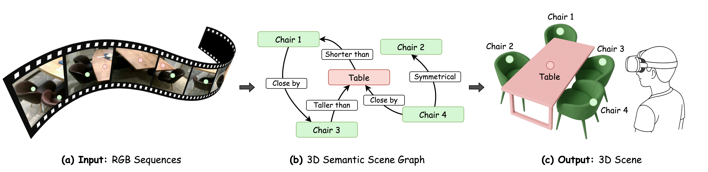

We introduce SceneLinker, which generates context-consistent 3D scenes via graph representation from RGB sequences.

We introduce SceneLinker, a novel framework that generates compositional virtual scenes via a 3D semantic scene graph from RGB sequences. To adaptively experience Mixed Reality (MR) contents based on each user's space, it is essential to generate a virtual scene that reflects the real-world layout by compactly capturing the semantic cues of the surroundings. Prior works struggled to fully capture the contextual relationship between objects or mainly focused on synthesizing diverse shapes, making it challenging to generate 3D scenes aligned with object arrangements. We address these challenges by designing a graph network with cross-check feature attention for scene graph prediction and constructing a graph-variational autoencoder (graph-VAE), which consists of a joint shape and layout block for virtual scene generation. Experiments on the 3RScan/3DSSG and SG-FRONT datasets demonstrate that our approach outperforms state-of-the-art methods in both quantitative and qualitative evaluations, even in complex indoor environments and under challenging scene graph constraints. Our work enables users to generate new virtual spaces from their physical environments via scene graphs, allowing them to create spatial MR content.
Detailed explanation of the method goes here...
Qualitative results demonstrating the performance...
@article{kim2026scenelinker,
author = {Kim, Seokyoung and Others},
title = {SceneLinker: Compositional 3D Scene Generation via Semantic Scene Graph from RGB Sequences},
journal = {Conference},
year = {2026},
}